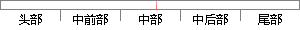

这样当有中断时，系统就会自动跳转到中断处理函数。
片段位置图

相似结果
相似片段：该系统就会自动泊车,用户只需要踩油门和刹车即可完成...用来强制进行外部中断处理程序,从而将关键数据保存到...就会根据中断向量自动跳转到相应的中断子函数中去,...
| 标题 | 《基于模糊控制的汽车倒车辅助决策系统的设计与实现》 |
| 对比库 | 中国学位论文全文数据库 |
| 作者 | 代宏达 |
| 机构 | 重庆邮电大学 |
| 分类 | 控制理论与控制工程 |
| 年份 | 2010 |
| 相似率 | 88.89% （严重抄袭） |
※ 片段修改建议 ※
近似词参考：- 这样：如许
- 处理：处置 处置惩罚
- 系统：体系
- 自动：主动
- 中断：间断 中止 停止
系统自动生成语句：如许当有间断时，体系就会主动跳转到间断处置函数。
注：本片段修改建议为系统自动生成，仅供参考。